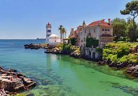

| Pelos seus valores naturais e paisagísticos, tanto a vila como o município conheceram um surto de popularidade que a viram tornar-se no destino preferido das elites portuguesas e estrangeiras a partir do século XIX. A chegada e eletrificação do caminho de ferro foram transcendentais para o progresso do município, sendo o principal fator para a sua urbanização a partir de 1930. Desde então, cresce até se afirmar como um dos principais subúrbios de Lisboa e um dos principais destinos turísticos do país,[5] partilhando dos fenómenos de suburbanização e periurbanização que se foram dando na restante área metropolitana, evidentes sobretudo no interior do município. (Texto adaptado da Wikipedia) |
 |